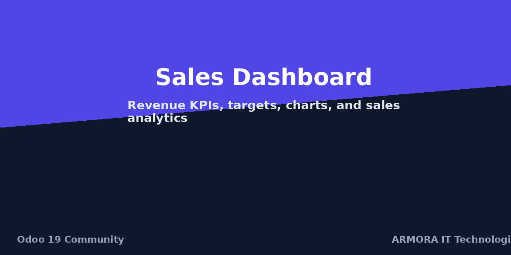

Not just charts. A factory command center that explains what is happening and why.

Most Odoo manufacturing setups stop at work orders and inventory. Directors need real-time plant performance, bottleneck visibility, and decision support.
Production %, delays, utilization, WIP, scrap.
Availability, performance, quality, overall OEE.
Running, idle, breakdown, queue length.
Narrative insights: downtime, stock risk, delays.
Slow centers, waiting jobs, at-risk orders.
Low stock, late vendors, material shortages.